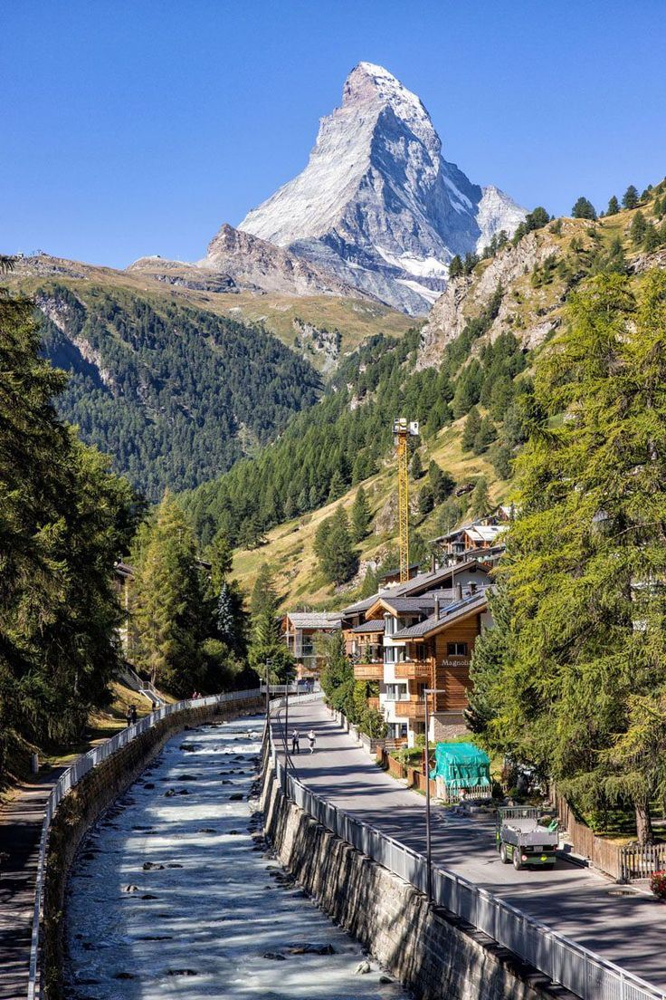
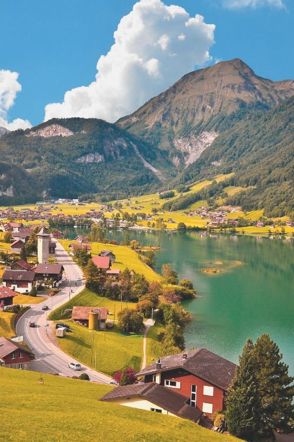

My Travel Stories
Story 1: Exploring Switzerland
Zermatt, in southern Switzerland’s Valais canton, is a mountain resort renowned for skiing, climbing and hiking. The town, at an elevation of around 1,600m, lies below the iconic, pyramid-shaped Matterhorn peak. Its main street, Bahnhofstrasse is lined with boutique shops, hotels and restaurants, and also has a lively après-ski scene. There are public outdoor rinks for ice-skating and curling.
Story 2: Lake Between Switzerland And Italy.

Lake Lugano is a glacial lake which is situated on the border between southern Switzerland and northern Italy. The lake, named after the city of Lugano, is situated between Lake Como and Lago Maggiore.
Story 3: A Lake In Central Switzerland
Lake Lucerne is a lake in central Switzerland and the fourth largest in the country. Aside from its unique shape, with countless different bays and side arms, Lake Lucerne is also noteworthy for the variety of scenery. From urban and medieval Lucerne, to the dramatic cliffs of Lake Uri along the Gotthard route, there's much to see.